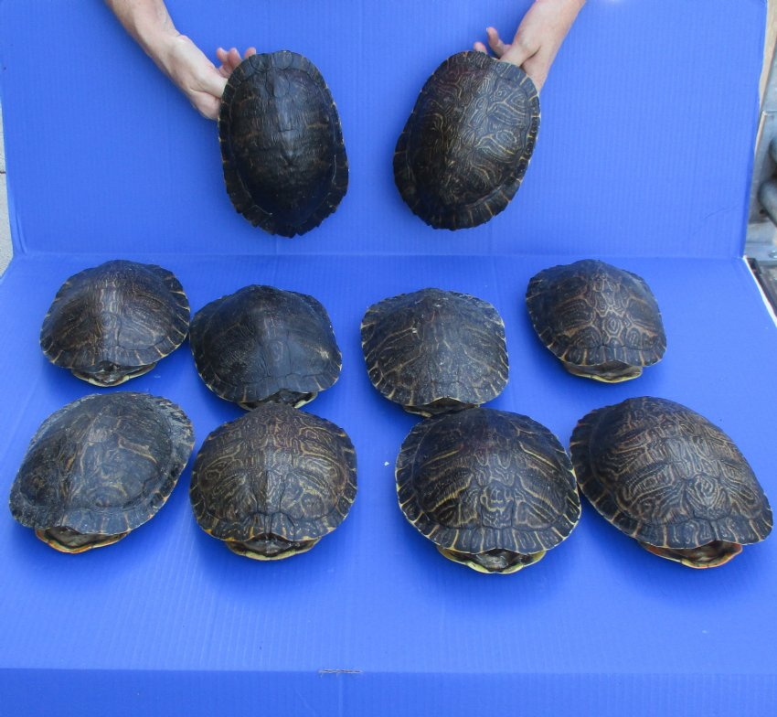

Overview
Sea turtles face extinction in many species due to global threats.
The three temperate oceans make up the turtles' natural habitat, but a number of reasons have led to a population drop in recent years.
Large turtles have few natural predators, and only sharks, big fish, crocodiles, killer whales, and occasionally octopi would attack an adult,
therefore natural reasons aren't regarded to be a factor in their population decline.
But many different kinds of fish and crabs prey on juvenile turtles.
Hunted as a Food Source

Adult turtles are hunted by several people around the globe for their meat and fat.
Unhatched turtle eggs are regarded as delightful delicacy by many people and as having aphrodisiac properties by some communities.
Every year, hundreds of thousands of eggs are taken from nearby beaches.
Shell Hunting and Unintentional Harm

Some locals engage in turtle hunting for the shells.
Prior to the establishment of regulations banning the trade in tortoiseshell,
the highly endangered Hawksbill turtle served as the primary source of the material.
Yet some continue to steal these turtles and sell their shells.
Yet perhaps even more detrimental is the unintentional harm that people cause to sea turtles.
Each year, countless creatures become hooked in fishing nets and die.
Many are also hit by boats as they swim close to the surface.
Turtles are harmed by both physical and chemical pollution.
The massive influx of
Degredation of Habitats

The massive influx of plastic into the oceans is a significant contributor to turtle deaths.
Adults frequently consume jellyfish, and they frequently mistake plastic bags for food.
The effects of man-made toxins on turtles also include problems with reproduction and even tumors.
Yet the degradation of habitat and nesting sites, two problems that are getting worse in Sri Lanka as the country grows,
is at the heart of the turtles' decline.
Turtles have little choice except to reproduce elsewhere as formerly undiscovered beaches become more crowded with
tourists and resorts encroach on their nesting grounds.